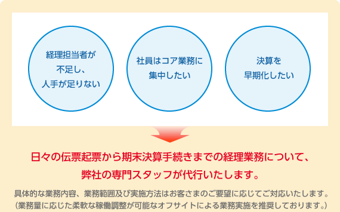
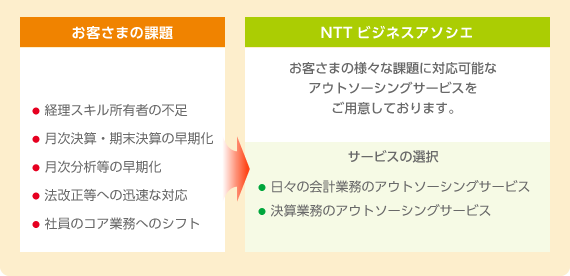
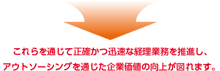

経理業務について、専門スタッフが代行いたします。
 


サービスの詳細
日々の会計業務のアウトソーシングサービス
決算業務のアウトソーシングサービス
税務決算業務
- 税効果計算・決算税額算定・税額算定基礎資料作成支援
（法人税・連結納税・消費税・地方税） 等
主なアウトソーシングパターン例
伝票処理など稼働がかかる日々の業務から月次決算、さらには専門スキルが要求される各期の決算に至るまでが対象範囲です。部分的なアウトソーシングからフルアウトソーシングまで、お客さまのご要望に合わせてご提供します。

経理・財務業務の代行、コンサルティングサービスの3つの特長
NTTグループの経理シェアードサービスセンターとして培った、経理実務から業務運営に至るまでの豊富なノウハウと膨大なナレッジに基づいたサービスをご提供いたします。
NTTグループをはじめ、数多くのグループ内外のお客さまから経理業務を受託してきた豊富な業務実績に基づいたサービスをご提供いたします。
経理実務経験の豊富な充実した業務スタッフが対応いたします。
経理業務アウトソーシングによるメリット
財務数値の信頼性およびコンプライアンスの向上
経理の専門スキルを有するスタッフが最新の法令等に基づき迅速かつ的確に業務を実施しますので、財務数値の信頼性が向上します。また、専門家であるアウトソーシング会社が間に入ることにより、不正防止にも貢献し、コンプライアンス向上に寄与します。
競争力強化への貢献
目まぐるしく変わる会計制度や税制への対応はアウトソーシング会社が実施しますので、お客さまがこれらの対応に煩わせることはありません。これにより、経営管理等の戦略的業務への社員の集中配置が可能となり、競争優位が高められます。
業務の効率化・精度向上の推進
アウトソーシングの導入が業務フローや運用体制・組織等の見直しを行うきっかけとなり、業務の効率化や精度向上に向けて改革・改善が期待されます。
コスト削減等への貢献
アウトソーシング会社が経理業務を集約して実施することによるスケールメリットを活かしたコスト削減が可能となります。また、経理要員としての社員を雇用した場合にかかる給与や社会保険料等の諸経費と採用の手間や教育コスト等も削減できます。

サイドナビエリアはここからです。